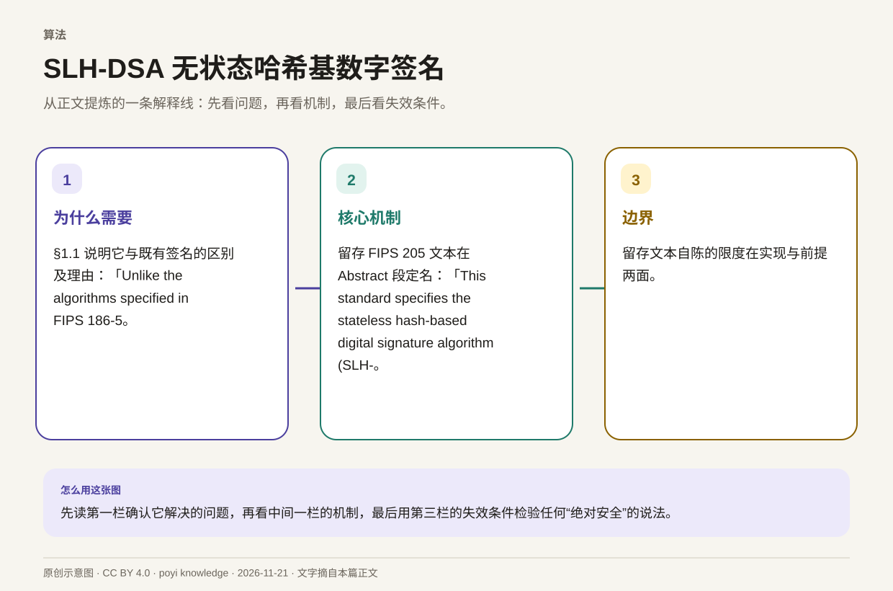
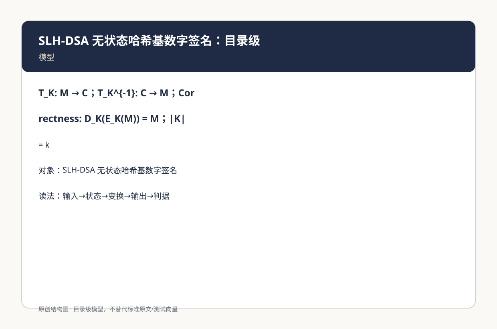

原理与机制
算法：SLH-DSA 状态哈希签名（SLH-DSA (SPHINCS+) stateless hash-based signature algorithm）。留存 FIPS 205 文本在 Abstract 段定名：「This standard specifies the stateless hash-based digital signature algorithm (SLH-DSA).」§3 给出构造骨架：「SLH-DSA is a stateless hash-based signature scheme that is constructed using other hash-based signature schemes as components:」并列出两类组件——「a few-time signature scheme, forest of random subsets (FORS), and (2) a multi-time signature scheme, the eXtended Merkle Signature Scheme (XMSS).」原理即此：SLH-DSA 以少次签名 FORS 与多次签名 XMSS（后者又建于一次性签名 WOTS+）为构件，组合成一个无状态、以哈希为基的数字签名。该条目据算法在标准文本里的自述立论，与记述该出版物的 fips205 标准记录相区别。

为什么重要
§1.1 说明它与既有签名的区别及理由：「Unlike the algorithms specified in FIPS 186-5 [1], SLH-DSA is designed to provide resistance against attacks from a large-scale quantum computer.」即相较于经典数字签名标准，它是为抗量子攻击而设计。其同段给出安全前提：「The security of the stateless hash-based digital signature algorithm (SLH-DSA) relies on the presumed difficulty of finding preimages for hash functions」——其安全归于哈希原像的困难性。Abstract 补上来源：「SLH-DSA is based on SPHINCS+, which was selected for standardization as part of the NIST Post-Quantum Cryptography Standardization process.」理由链因此是：经典签名在量子下失效，而以哈希原像困难为基础、无状态、由 SPHINCS+ 标准化的方案可提供量子抗力。措辞是 presumed difficulty，不作证明性断言。
应用与实例
使用约束在编号小节，措辞层级分明。§3.2 对组件外泄给出 should not：「As WOTS+, XMSS, FORS, and hypertree signature schemes are not approved for use as stand-alone signature schemes, cryptographic modules should not make interfaces to these components available to applications.」即组件仅用于拼出 SLH-DSA，模块不宜把它们做成对外接口。§3.1 对算术给出 shall not：「Implementations of SLH-DSA shall not use floating-point arithmetic, as rounding errors in floating point operations may lead to incorrect results in some cases.」——实现不得用浮点运算，理由是舍入误差可能致错。用途面貌因此是把 SLH-DSA 作整体签名方案使用，组件不作独立接口对外（should not），算术须避免浮点（shall not）。should not 与 shall not 在此不可互换。

边界与攻击面
留存文本自陈的限度在实现与前提两面。§3.2 记侧信道与故障攻击敞口：「Care must be taken to protect implementations against attacks, such as side-channel attacks or fault attacks [17, 18, 19, 20, 21].」即私钥保密性关键，实现须防侧信道与故障提取。前提侧的限度见 why 段所引：其安全系于哈希原像之 presumed difficulty，而非归约到已被普遍接受的困难问题的证明。故被承认的脆弱来自实现（侧信道/故障）与假设（哈希抗力），而非标准文本给出的对 SLH-DSA 本身的攻破。§3.1 那句 shall-not 浮点限制（见 used 段）也属此类——它约束的是正确性，非攻击结果，该条目据文本如实记录，不作已被破解的断言。
历史与背景
§1.2 交代它与候选版本的沿革。先记遴选：「After three rounds of evaluation and analysis, NIST selected the first four algorithms for standardization.」再记本标准对第三轮版本的关系：「This standard contains several minor modifications compared to Version 3 [4], which was submitted at the beginning of round three of the NIST PQC Standardization process.」并给出改名约定：「Throughout this standard, SPHINCS+ will be referred to as SLH-DSA for stateless hash-based digital signature algorithm.」门面板块（Title block）印标题 Stateless Hash-Based Digital Signature Standard 与 Published: August 13, 2024 Effective: August 13, 2024。据此，该条目所述算法是 SPHINCS+ 定稿后的标准形态 SLH-DSA，与记述该出版物的 fips205 记录分列，二者不互相作为别名。
逐步示例与核验
形式模型与复算步骤
[s=k^{-1}\big(H(m)+r d\big)\bmod n]
SLH-DSA 状态哈希签名的公开参数、密钥/随机数与消息；变量说明：k 一次性随机数，r 为承诺点横坐标，d 私钥，n 子群阶。1.选择随机 k，计算 R=kG 与 r。2.计算 s=k^{-1}(H(m)+rd) mod n。3.输出 (r,s)，验证者检查签名方程。边界：公式只覆盖已登记的参数与假设；参数取值、标准版本和实现细节仍以来源为准。
参考出处
- Wikipedia search entry for SLH-DSA 状态哈希签名. https://zh.wikipedia.org/w/index.php?search=SLH-DSA%20%E7%8A%B6%E6%80%81%E5%93%88%E5%B8%8C%E7%AD%BE%E5%90%8D
- Handbook of Applied Cryptography (Menezes, van Oorschot, Vanstone). https://www.cacr.math.uwaterloo.ca/hac/